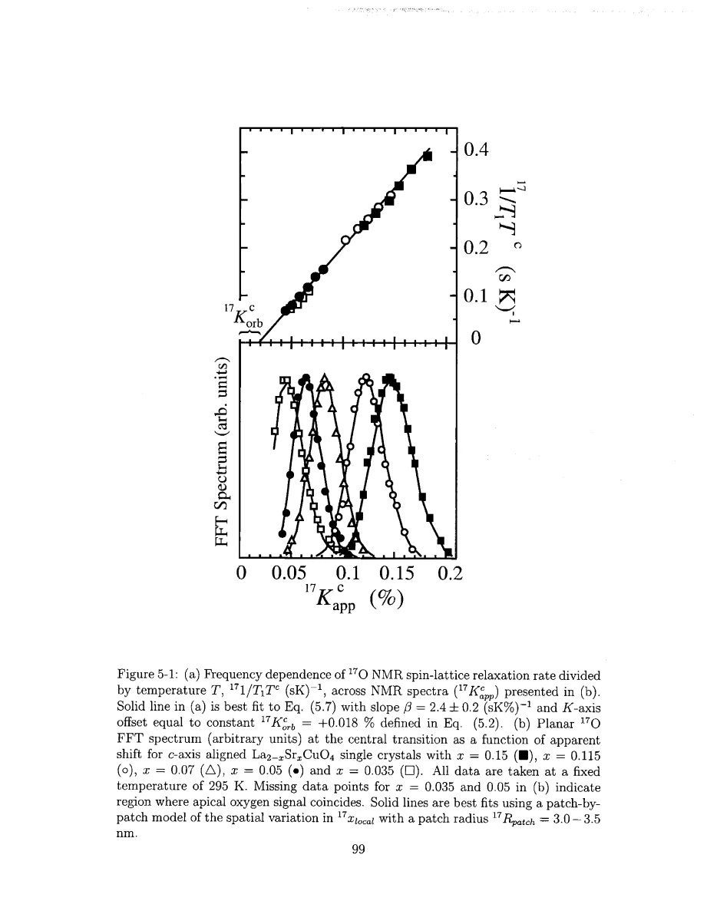
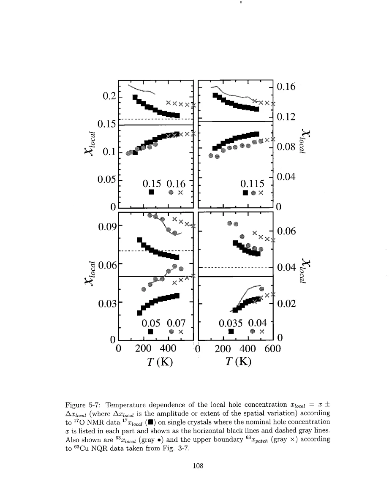
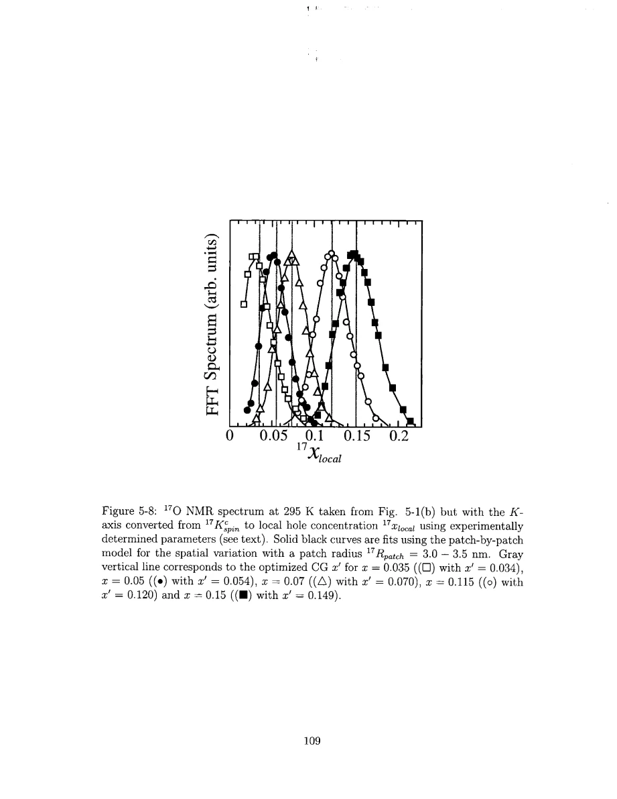

Singer · supplied source 2002 · chapter unit
7. The oxygen spin-channel cross-check
Oxygen scaling supports an electronic spin-shift distribution and a comparable model length within its valid temperature window.
The question: Can a spin-sensitive nucleus reproduce the local variation inferred from Cu EFG-selected nuclei?
Before you start: the terms you need
- Nominal x: Sr atoms per LSCO formula unit, used as the average hole-doping label.
- Electric field gradient (EFG): curvature of the electric potential at a nucleus; determines the Cu quadrupole resonance.
- Knight shift: the nuclear resonance shift caused by electronic magnetic response, with orbital and spin contributions.
- T₁ and T₂: recovery of longitudinal nuclear magnetization and decay of transverse coherence; they answer different questions.
- Hyperfine form factor: the wavevector-dependent weighting through which a nucleus samples electronic spin fluctuations.
- HWHM: half width at half maximum; the thesis also defines an effective width from the second moment.
See → explain → check
Follow the idea in 4 pictures.
Picture 1 / 4
Separate orbital and spin shift
Look for: Subtract the baseline before interpreting the spin spectrum.
Swipe across the picture to read every label, or enlarge it below.
- Apparent Knight shift
- Subtract orbital and Q correction
- Spin shift
Teaching schematic; no measured points or calibrated scales.
The apparent shift is not the local spin susceptibility alone.
Check the original: PDF p. 97
Picture 2 / 4
Static and dynamic spin responses track
Look for: Across the spectrum, test rate versus spin shift.
Swipe across the picture to read every label, or enlarge it below.
- Static spin shift
- Dynamic 1/T₁T
Measured scaling is shown in the linked original figure; this comparison does not invent fit points.
Linear correspondence supplies a diagnostic beyond linewidth alone.
Check the original: PDF p. 99 · PDF p. 102
Picture 3 / 4
Translate width with an empirical slope
Look for: Measure the center-shift dependence on nominal doping at the same temperature.
Swipe across the picture to read every label, or enlarge it below.
- Spin-shift width
- Center shift versus x
- Δxlocal
Teaching schematic; no measured points or calibrated scales.
The slope calibrates the characteristic electronic extent.
Check the original: PDF p. 103 · PDF p. 106
Picture 4 / 4
Compare nuclei in valid regions
Look for: Keep the Cu bound and oxygen estimate distinct.
Swipe across the picture to read every label, or enlarge it below.
- Cu estimate
- Oxygen estimate
Teaching schematic; no measured points or calibrated scales.
Agreement is semi-quantitative and depends on separate experimental limits.
Check the original: PDF p. 108 · PDF p. 110 · PDF p. 112
Explain it back.
Try answering aloud before opening the explanation.
Why does the central transition help separate spin and structural broadening?
Its first-order quadrupole shift vanishes; the smaller second-order correction is handled separately, while spin-shift distributions remain.
Are the broad error bars in Fig. 5-3 ordinary uncertainty bars on a mean?
They represent the spectral HWHM extent used to illustrate overlap, not just measurement error in the center.
Go deeper Follow the full argument
Choose a cleaner observable
The oxygen measurements use isotope-enriched single crystals, an approximately 9 T field along c, and the planar central transition. Its apparent shift includes a constant orbital contribution and a spin contribution; a small second-order quadrupole correction is subtracted. Removing these contributions correctly is essential before converting a width to a spin-susceptibility distribution. An echo FFT records the narrow spectrum and supplies relaxation data at several positions. Planar and apical oxygen signals sometimes overlap, especially when the planar shift is small, so some portions cannot be used without mixing sites. Also, an I = 5/2 central-transition recovery contains several nuclear relaxation exponentials even for a single electronic T₁. One must distinguish that known transition structure from a distribution of electronic relaxation rates.
The empirical collapse is the key test
At 295 K the measured oxygen 1/(T₁T) values across different spectra collapse approximately onto one line against the spin Knight shift. The same relation holds across spectra at several temperatures above a composition-dependent scale. Singer argues that broadening dominated only by extraneous localized impurity fields would not naturally preserve this shared correspondence between static and dynamic electronic response. The test therefore supports treating the linewidth as a distribution of intrinsic spin shifts in the studied samples. The source then measures how the center spin shift changes with nominal x at fixed temperature. Dividing the spin-shift width by that empirical slope gives a characteristic local-hole extent. The width error bars in the mean-shift plots depict spectral extent, not uncertainty in the location of the center. This distinction is necessary to understand the increasing overlap on cooling.
PDF p. 99 · PDF p. 100 · PDF p. 101 · PDF p. 102 · PDF p. 103 · PDF p. 104 · PDF p. 105 · PDF p. 106 · PDF p. 107
Compare distributions, then compare lengths
The oxygen-derived local extents agree semi-quantitatively with the Cu relaxation-calibrated results. Because the observables and their hyperfine filters differ, this consistency supports correlated variation in spin and charge response. It is stronger evidence than comparing two raw linewidths with unrelated units. Singer next applies random donor counting without the Cu quadrupole calculation, converting the oxygen shift axis to an inferred local-hole axis. A fitted mean offset accommodates small alignment-related systematic shifts, while R adjusts the distribution width and line-shape asymmetry. The resulting radius is of order a few nanometres, comparable to the reliable Cu bounds. Oxygen is less affected by the Cu structural-width ambiguity, but its radius still depends on the donor-averaging model. Apical overlap and failed scaling at low temperature set additional limits. The analysis does not make the two probes identical or establish a coordinate-resolved map of patches.
PDF p. 107 · PDF p. 108 · PDF p. 109 · PDF p. 110 · PDF p. 111 · PDF p. 112
Translate the mathematics Essential equations and their meaning
¹⁷Kappᶜ = ¹⁷Korbᶜ + ¹⁷Kspinᶜ
Symbols: The source uses Korbᶜ = +0.018%; its plotted central shifts also correct small second-order quadrupole effects.
Spin-shift width and mean should be interpreted after removing the specified nonspin contributions.
¹⁷Δxlocal = ¹⁷ΔKspinᶜ / [∂⟨¹⁷Kspinᶜ⟩/∂x]T
Symbols: The denominator is the measured slope across nominal compositions at fixed T.
Source Eq. 5.8 uses local-to-nominal correspondence; apply only while scaling supports the electronic-width interpretation.
1/(¹⁷T₁T)c = β ¹⁷Kspinᶜ
Symbols: The rate is temperature-normalized and K is the spin shift.
Source Eq. 5.7 is empirical linear scaling; it is not the Korringa square law.
Read the evidence Guided original source pages

PDF p. 99

PDF p. 108

PDF p. 109
What the evidence supports—and where it stops
- The inferred local-hole axis assumes the measured shift–doping correspondence extends locally.
- Apical overlap, crystal alignment and temperature-dependent scaling limits constrain the oxygen reconstruction.
Source version, reading coverage and preservation
Every substantive chapter and appendix was read from locally generated Windows OCR of the scanned original. Key figures, symbols, equations and boundaries were checked on readable full-page renders; PDF and printed page numbers agree at inspected locations.
Reviewed body pages: 10, 11, 12, 13, 14, 15, 16, 17, 18, 19, 20, 21, 22, 23, 24, 25, 26, 27, 28, 29, 30, 31, 32, 33, 34, 35, 36, 37, 38, 39, 40, 41, 42, 43, 44, 45, 46, 47, 48, 49, 50, 51, 52, 53, 54, 55, 56, 57, 58, 59, 60, 61, 62, 63, 64, 65, 66, 67, 68, 69, 70, 71, 72, 73, 74, 75, 76, 77, 78, 79, 80, 81, 82, 83, 84, 85, 86, 87, 88, 89, 90, 91, 92, 93, 94, 95, 96, 97, 98, 99, 100, 101, 102, 103, 104, 105, 106, 107, 108, 109, 110, 111, 112, 113, 114, 115, 116, 117, 118, 119, 120, 121, 122, 123, 124, 125, 126, 127, 128, 129, 130, 131, 132, 133, 134, 135, 136, 137. Bibliography pages 138–144 were not independently verified against every cited publication. Front matter was inspected for title, abstract and chapter mapping. The guide does not claim manual visual reading of every scan or exact transcription of all derivations; OCR is imperfect and the damaged abstract region was checked against the conclusions.
Source SHA-256: e5fdb96ea81a06f7a51624e02fa58319dc3d21926a030e06fbbedc7061f5937d. Original file bytes preserved locally, and in this room’s original download.
Thesis - Singer - 2002 - Nuclear resonance of electronic inhomogeneity in LSCO.pdf